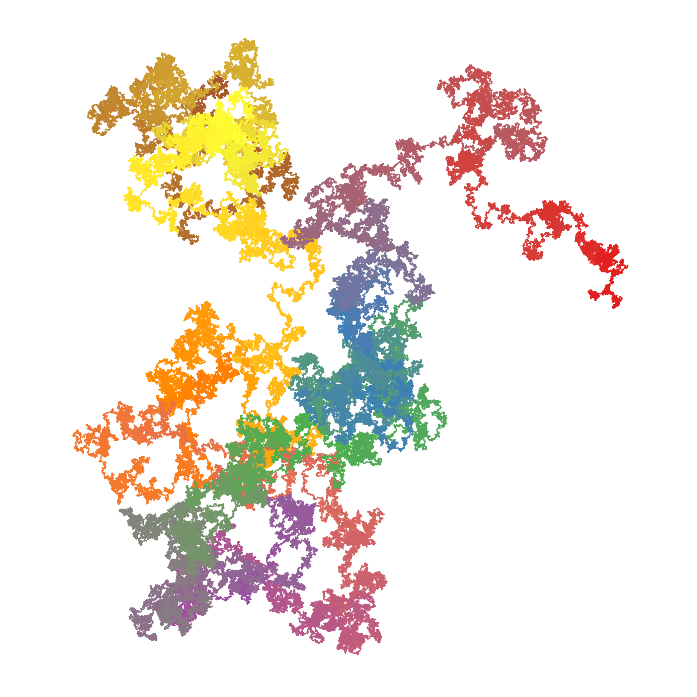

Pi-walk
Walking the pie
R
Generativ kunst
Heavily inspired by the talented Naideh Bremer.
The idea is:
Begin somewhere in the coordinate system. Take the first digit of pi, and take a step in a direction specified by that digit. Take the next digit of i. And take a new step i a direction specified by that digit.
Continue for 1000000 steps.
First - what direction should we take for a given digit?:
x <- cos(5/2*pi - digit/5*pi)
y <- sin(5/2*pi - digit/5*pi)This should return the x,y step, based on a digit.
If we take two steps, the x-position at the end will be the sum of the two x-steps. Similar with the y-position.
Therefore we can calculate the position at step n by calculating the cumulative sum of x and y.
We will need to add (0,0) at the beginning - where we start our walk.
Taking pi as a string, we can do all that, and return a tibble:
library(tidyverse)
piPoints <- function(piString){
# removing punctuation
numbers <- paste0(substr(piString, 1, 1), substr(piString, 3, nchar(piString)))
# Splitting numbers
numbers <- as.integer(unlist(strsplit(numbers,"")))
# calculating steps
x <- cos(5/2*pi - numbers/5*pi)
y <- sin(5/2*pi - numbers/5*pi)
# calculating cumulative steps
x <- cumsum(x)
y <- cumsum(y)
# adding start point
x <- c(0,x)
y <- c(0,y)
# adding id for sequential coloring
id <- 1:(length(y))
# Assembling and returning dataframe
tibble(x=x,y=y, id = id)
}Next we’ll get pi with a million digits:
large_pi <- read_file("https://pi2e.ch/blog/wp-content/uploads/2017/03/pi_dec_1m.txt")Pour that into the function:
df <- piPoints(large_pi)Plot - and save
ggplot(df, aes(x,y,group="1")) +
geom_path(aes(colour=id)) +
scale_colour_distiller(type="seq", palette="Set1") +
theme_bw() +
coord_fixed(ratio = 1) +
theme(line = element_blank(),
text = element_blank(),
title = element_blank(),
legend.position="none",
panel.border = element_blank(),
panel.background = element_blank())
ggsave("piwalk.png") There are several other mathematical constants. And there are also possibilities for variation in calculating the steps. For now I’m satisfied with the result.